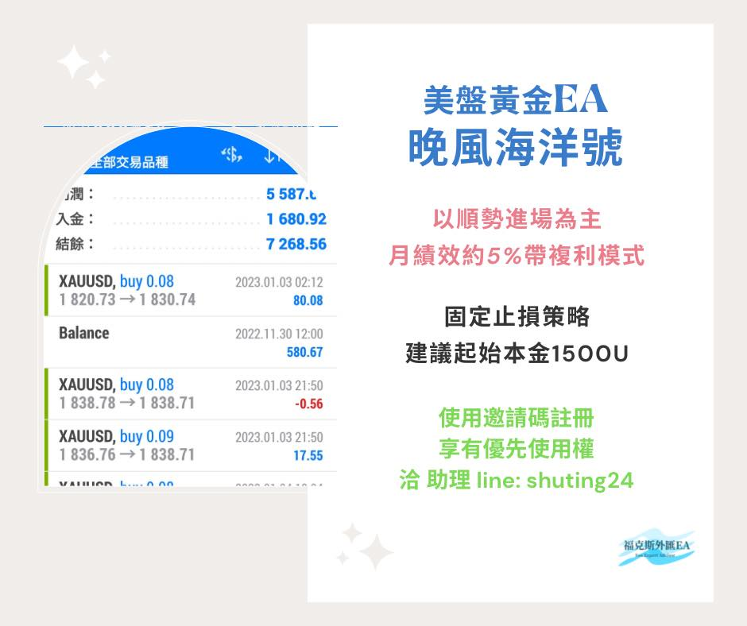

外匯的由來與EA的介紹
認識外匯
稱為FX或外匯交易
指個人、企業或中央銀行將一種貨幣轉換成另一種貨幣，可以將其理解為將買方和賣方聯繫起來，以商定的價格進行貨幣兌換的市場，出國旅行時兌換外幣的行為即為 外匯買賣。
- 外匯市場是迄今為止規模最大、流動性最高的交易市場，日均交易量超過七兆美元
- 外匯交易與股票、大宗商品等其他金融產品不同，並非通過交易所進行，而是經由場外交易市場（OTC）由買賣雙方直接交易
- 場外交易市場於全球銀行和網路之間運行，分佈於倫敦、紐約、悉尼和東京等不同時區，因此可以全天24小時不限時間地點進行交易
- 外匯交易運作：透過買賣不同貨幣，以貨幣與貨幣之間的匯率變化來獲取利益，或是進行避險，通常交易外匯的方式即為差價合約 CFD
關於貨幣對
外匯市場交易中，兩種貨幣所組成的外匯交易匯率就是所謂的「貨幣對（Currency Pairs）」
報價的形式就是每一單位的貨幣可以兌換多少另外一種貨幣
兩種貨幣的呈現是透過斜線區隔，例如歐元兌美元（EUR/USD）、英鎊兌美元（GBP/USD）等等
何謂EA
何謂EA
EA全稱 Expert Advisor，中文為全自動交易系統，即把製作好的交易策略程式，安裝在 MT4平台上來執行訂單
由電腦模擬交易員的下單操作進行交易，根據預先編輯好的交易策略程式來執行訂單，程式透過即時獲取市場價格，自動判斷下單與平倉時機
遇到大行情時也不需要太擔心因為有停損停利可以先行設置!
EA交易的優勢
- 集結良好策略的交易技巧，把經過驗證的策略用於實盤交易
- 克服人性中的弱點，避免情緒化操作
- 自動下單，適應價格變動和趨勢變動
- 電腦24小時監控行情，無須人操作
- 嚴格風險管理
EA介紹

燦爛海洋號
性質：單貨幣一次一單
策略：保守止損，注重月報酬率、年化率
一個月約5%績效，勝率高，風險可控，已經實盤驗證
下單貨幣對包含：嚴選五大兌美貨幣兌，交叉貨幣兌+黃金
建議起始本金1000u
若確定使用
則須簽訂合約+依自身資金狀況追加本金

晚風海洋號
性質：美盤(黃金)
策略：
1.隨冬令、夏令時節調整開倉時間
2.以順勢進場為主，帶止損
一個月約5%績效，自帶複利性質
風險可控，會避開數據波動行情
已經有實盤驗證
建議起始本金1500u
若確定使用
則須簽訂合約+依自身資金狀況追加本金
影片介紹
合作平台
我們與外匯前三大經濟商TMGM合作
公司於2013年設立於澳洲